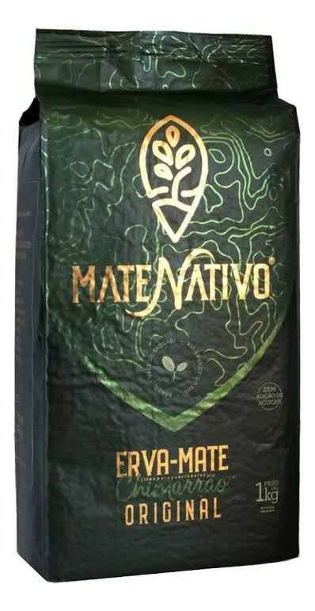

tradição
A erva-mate é um pilar cultural, histórico e social da América do Sul, consumido no Brasil, Argentina, Uruguai e Paraguai. Sua história remonta aos povos indígenas Guaranis e Kaingangs, que a utilizavam como planta sagrada e medicinal para combater o cansaço e renovar as energias, hábito que se expandiu com a chegada dos colonizadores. O grande valor cultural do mate reside na sua roda social, um ritual de acolhimento e igualdade no qual a cuia e a bomba são compartilhadas de mão em mão, aproximando as pessoas e eliminando divisões sociais. Esse consumo se adapta à diversidade de cada região: no Sul, o chimarrão quente expressa a tradição gaúcha; no Centro-Oeste e Paraguai, o tererê gelado combate o calor (reconhecido como Patrimônio Imaterial pela UNESCO); e no Sudeste, o chá mate tostado e gelado virou símbolo praiano e urbano, como no Rio de Janeiro. Além do impacto social e identitário presente na arte e no folclore, a planta desempenhou um papel econômico fundamental no desenvolvimento de estados como o Paraná através do Ciclo da Erva-Mate, consolidando-se hoje como um elo vivo entre a memória ancestral e o convívio diário.
Contexto histórico
No Paraná, a tradição do chimarrão nasceu com os povos Guarani e Kaingang e ganhou força no século XIX com o Tropeirismo e o Ciclo da Erva-Mate. A riqueza gerada pela produção no Planalto Paranaense impulsionou a economia, financiou obras importantes e foi decisiva para a emancipação política do estado em 1853. Além de motor econômico, a bebida uniu tropeiros e imigrantes europeus, tornando-se um símbolo duradouro de identidade, hospitalidade e convivência no Paraná.

A importância do chimarrão para a identidade cultural paranaense está em unira história, a economia e a união do estado. Ele preserva a herança dos povos Guarani e Kaingang e o legado do tropeirismo. Foi por causa do Ciclo da Erva-Mate que o Paraná alcançou sua emancipação política em 1853 e construiu grandes obras. Além disso, o hábito de tomar mate integrou os imigrantes europeus à cultura local, consolidando a roda de chimarrão como o maior símbolo de hospitalidade, convivência e igualdade no cotidiano paranaense.


Curiosidades
Curiosidades 1
O chimarrão é uma tradição cultural do Sul do Brasil herdada dos povos Guarani e Kaingang. Mais do que uma bebida de erva-mate, ele representa um ritual de hospitalidade e convivência comunitária. A roda de mate possui regras próprias, como não mexer na bomba e não dizer "obrigado" antes do fim. Tomar o mate até o final antes de passar a cuia garante o respeito e o ritmo do encontro. Essa prática secular fortalece os laços de amizade e preserva viva a identidade cultural gaúcha.
Curiosidade 2
O chimarrão é uma tradição secular do Sul do Brasil herdada dos povos indígenas Guarani e Kaingang. Muito além de uma simples bebida, ele representa um importante ritual comunitário de acolhimento e amizade. A roda de mate possui regras de etiqueta próprias, como jamais mexer na bomba ou servir a cuia morna. Dizer "obrigado" ao devolver o mate sinaliza que você já está satisfeito e não quer mais beber. Essa prática fortalece os laços sociais e mantém viva a rica identidade e a memória da cultura gaúcha.